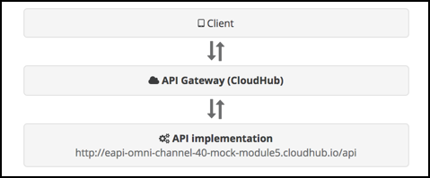
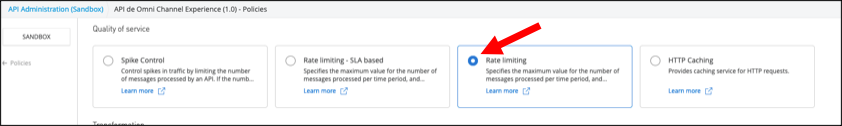

Descripción general
La gestión de API es esencial para una arquitectura API-Led, ya que proporciona un marco de gobierno a sus API en las tres capas. Para que se lleve a cabo la gestión de API, debemos poder alojar nuestras API, tanto nuevas como existentes, en una puerta de enlace de API que se utilizará para hacer cumplir las políticas y recopilar datos para análisis.
MuleSoft puede aplicar la gobernanza directamente a una API implementada por MuleSoft a través de una puerta de enlace proxy para estas y otras API externas existentes.
Las API que usaremos son dos versiones de la API de Omni Channel. Creará una puerta de enlace proxy para una implementación simulada ya implementada en este laboratorio.
En este laboratorio, definiremos una API que actuará como un proxy para la API Omni Channel de Mythical Corporation. El proxy se implementará en API Gateway de Anypoint Platform, que funciona con el Mule Runtime. El Mule Runtime puede ejecutarse en las instalaciones on premises, en una nube privada o en el servicio CloudHub alojado por Anypoint Platform. En este escenario, usaremos el último, CloudHub.
Los clientes accederán a la API a través de API Gateway, que luego enviará las solicitudes a la implementación simulada de la API de Omni Channel. Tener el proxy implementado en la puerta de enlace API permite a Anypoint Platform administrar, controlar el acceso y monitorear el uso de la API, que veremos en los laboratorios posteriores.

- en Anypoint Platform (https://anypoint.mulesoft.com), haga clic en el icono API Manager para comenzar a gestionar su API.

- También puede hacer clic en el botón de navegación en la parte superior izquierda, luego en API Manager.

- seleccione SANDBOX como entorno
Para esta práctica de laboratorio, configuraremos la API como un proxy para la implementación simulada de la API Omni Channel de Mythical Corporation. La API está disponible como una API Restful HTTP accesible a través de la URL base http://workshop-omni-channel-mock-service-v40.cloudhub.io/api.
Para crear el proxy vamos a obtener la Definición de API de Exchange.
- Ahora configuremos una puerta de enlace de proxy API para esta API. De vuelta en la página de administración de API, haga clic en Manage API y seleccione Manage API From Exchange
- Configurar la API con la siguiente información:
- Select runtime : seleccione el el tipo mule gateway para aplicaciones mulesoft.
- Proxy type: seleccione Deploy a proxy application.
- Proxy app name:
experiencia-omni-channel. Use minúsculas, números, utilice guiones sin espacios - Runtime version: seleccione de la lista desplegable
4.4.0. - Target type: elija
CloudHub - seleccione el botón "Next"
- Configure con la siguiente información:
- API : Seleccione "Select API from Exchange"
- Select API:
<nombre de usuario> -proxy-omni-channel. Seleccione la api creada "Omni chanel Experience" de la lista de APIs disponibles de Exchange
- Presione el botón Next.
- Implementation URI:
http://workshop-omni-channel-mock-service-v40.cloudhub.io/api - Base Path: /
- Haga clic en Next.
- Haga clic en Save & Deploy
- Una vez implementada, en la parte superior de la página verá el estado de la API. Debe ser verde con una bola verde al lado, como se muestra a continuación. Esto indica que su API se implementó correctamente y ahora se está administrando.
Para probar la administración de políticas, agregara una Política Rate limiting sobre la API.
- Vaya a la página de administración de la API de Omni Channel.
- Haga clic en la pestaña Policies debajo de los contratos de API.
- Haga clic en el botón Add policy.
- Haga clic en la política de Rate Limiting, seleccione la versión y haga clic en Next.
 - Ingrese un máximo de solicitudes de 3 por 1 minuto como se muestra y haga clic en Apply.
- Debería ver la política de Rate Limiting en Políticas aplicadas.
- Espere un minuto (API Gateway recibe actualizaciones de políticas cada 60 segundos de forma predeterminada).
- Pruebe la API usando Postman o cualquier otra herramienta de prueba de API y acceda a su URL de proxy agregando /products/search al final (por ejemplo, http: // <nombredeusuario> -proxy-omni-channel.us-e2.cloudhub.io/products/search ).

- Pruébelo nuevamente presionando el Send botón 3 veces.
- En la tercera invocación, recibirá un mensaje de error que indica que se ha excedido la cuota. Esto demuestra que se ha aplicado su política de Rate limiting.